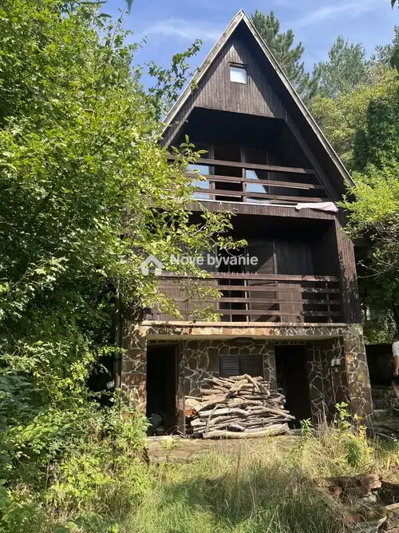
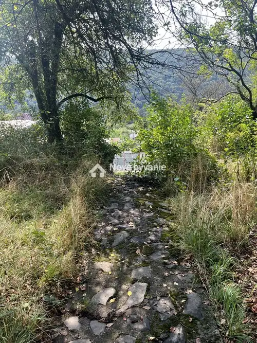
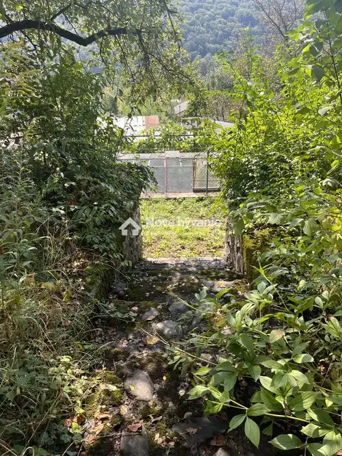
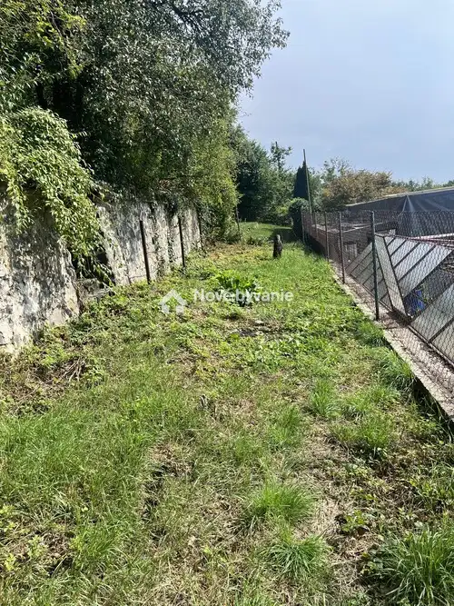
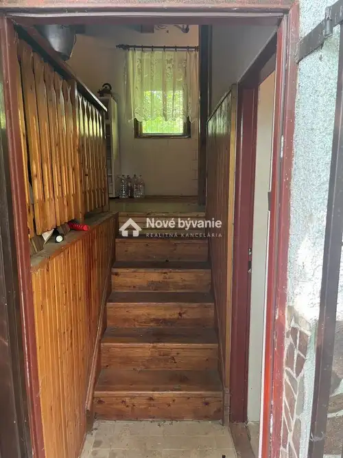

Predám Chatu Košiciach časť Čermeľ ID: N002-113-BILL
Kavečany, Košice






- Plocha42 m²
- StavPôvodný stav
- VlastníctvoOsobné
O nehnuteľnosti
ID: N002-13-BILL Na predaj murovaná chata s krásnym pozemkom – Čermeľ, KošicePonúkam na predaj útulnú murovanú chatu/chalupu nachádzajúcu sa v záhradkárskej lokalite Čermeľ. Chata je ideálna na víkendový relax aj dlhodobejší pobyt v prírode s výborným prístupom do mesta.Dispozícia nehnuteľnosti:- Zastavaná plocha: 42 m² (rozmer 5,06 × 8,26 m)- Pozemok: 688 m² – upravený kaskádovito, spevnený 4 kamennými opornými múrmi- Podzemné podlažie: dve skladové/pivničné miestnosti (10,60 m² a 8,62 m²), steny z masívneho kameňa (hrúbka 40 – 50 cm)- Prízemie: hala s otvoreným krbom, kuchynský kút, kúpeľňa s WC, balkón- Podkrovie: priestranná izba s výstupom na juh orientovaný balkón, prístup po drevenom schodištiIS a vybavenie:- Elektrina 230/400 V- Vodovod (úžitková voda) + prietokový ohrievač- Kanalizácia do žumpy- Záhradný vodovod vedený v zemi (2 vývody)Prístup a lokalita:- Dostupnosť autom po asfaltovej a lesnej ceste od zastávky Čermeľ- Možnosť pešieho prístupu z Kavečianskej cesty (zastávka Suchá dolina)- Pokojné prostredie s celoročne obývanými chatami v okolí. Cena tejto nehnuteľnosti je 109.000€. V prípade záujmu ma kontaktujte na t.č. +421 910 573 494, prípadne mailom billy@novebyvaniereality.sk
Parametre
- Druh
- Chalupa, rekreačný domček
- Dátum zverejnenia
- 06. 10. 2025
- Plocha pozemku
- 688 m²
- Počet nadzemných podlaží
- 3
- Stav nehnuteľnosti
- Pôvodný stav
- Typ
- Predaj
- Vlastníctvo
- Osobné
- Vybavenie
- Balkón, Pivnica
- Zastavaná plocha
- 42 m²
- Úžitková plocha
- 42 m²